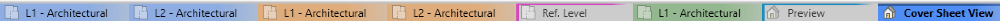
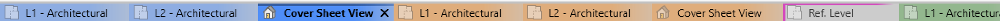
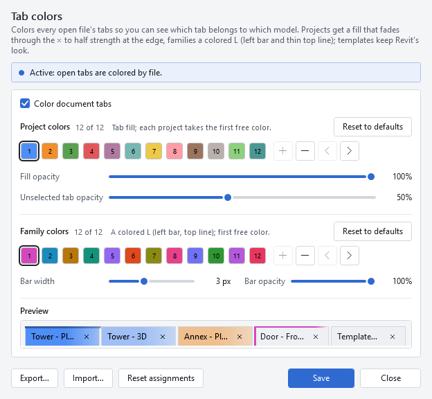

Projects get a color fill
Every view in a project shares one color. The active tab stands at full strength while its siblings recede, with a smooth fade through the close button and no gap between tabs.
See how coloring worksNative add-in for Revit 2025–2027
Splash-It colors every Revit document tab by file, so you always know which model you are looking at. Projects get a rich fill, families a crisp color mark, and one click brings each file's tabs together.
A little add-in. A clearer workspace.
Keep several models, families, views, sheets, and schedules open without losing track. Splash-It makes the tab strip useful at a glance, then gets out of your way.
Every view in a project shares one color. The active tab stands at full strength while its siblings recede, with a smooth fade through the close button and no gap between tabs.
See how coloring worksA colored L on the left and top edge distinguishes family documents without filling the tab. It works for files opened from disk and families edited from a project.
Learn about file typesGroup Tabs gathers each file's views without changing their order or your selected view. It sorts only when you ask, works with coloring on or off, and never moves tabs between panes.
Explore Group TabsChoose up to 12 project colors and 12 family colors. Pick from a palette, enter a hex value, or sample anywhere on screen, then tune fill, inactive-tab, and family-bar opacity.
See the color controlsSplash-It follows Revit's theme. Titles and close glyphs choose black or white for contrast against the color actually shown, so the strip stays legible when the theme changes.
Built for both themesExport your colors and settings to a small JSON file, then import a teammate's look. Saving updates open tabs immediately. Turning coloring off restores Revit's original styles.
Share and reset settingsFrom scattered to sorted
Revit adds new views at the end of the strip. Group Tabs brings each file's tabs together while keeping the current file first, preserving each file's view order, and leaving your selected view selected.


Work across projects and families as usual. Coloring is helpful, but Group Tabs works with or without it.
Find the button beside Splash-It on Revit's Add-Ins tab, or assign your own keyboard shortcut.
Nothing resorts automatically. Drag tabs wherever you like afterwards, and group them again only when you want.

Simple to tune. Easy to leave alone.
Open Splash-It from Revit's Add-Ins tab. The preview changes as you tune your palettes, and Save restyles every open tab at once.
Small install. Immediate payoff.
One per-user MSI installs Splash-It into each supported Revit it finds. No administrator rights, no runtime download, and no change to your models.
Read the full installation guideGet the latest SplashIt-<version>.msi, then close Revit before running it.
The installer detects Revit 2025, 2026, and 2027 and adds Splash-It only where it belongs.
Start Revit and allow Splash-It. Coloring is on by default, ready for your first tab.
Ready when you are
Download the latest release for Revit 2025, 2026, or 2027. Choose the versioned MSI for a per-user install, or a year-specific ZIP for a manual install.